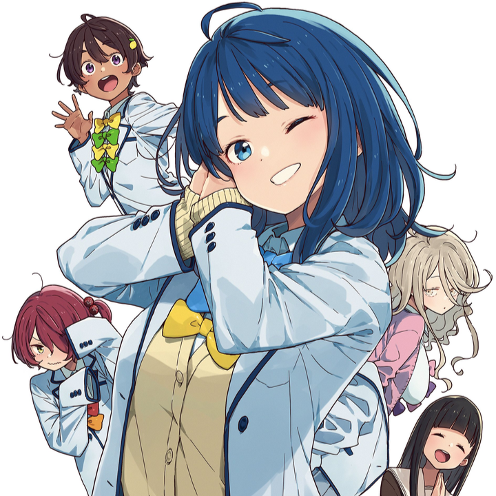
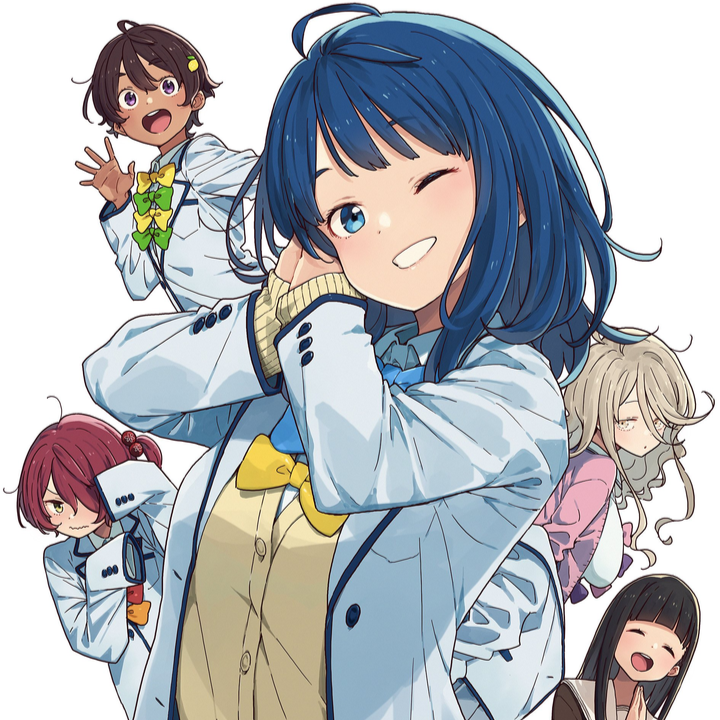

About the Anime
Kazuhiko Nukumizu, a quiet and unassuming high school student, stumbles upon a shocking scene: the
popular Akina Yanami being dumped by a guy. "He promised to marry me!" she cries. "When was that?"
Kazuhiko asks. "When we were four or five," she replies. That doesn't really count, does it? This
moment sets off a chain of encounters with other girls radiating a sense of bittersweet defeat, like
track star Lemon Shiozake and literary club member Chika Kokuri.
“Nukumizu, girls fall into two categories: childhood friends or heartbreakers.”
“Bold classification, I must say.”
As these "defeated yet shining" girls cross paths with him, Kazuhiko finds himself at the center of
a mysterious and bittersweet coming-of-age story. Here's to hoping they all find their happiness!
Main Characters
[CHARACTER NAME]
[CHARACTER DESCRIPTION]